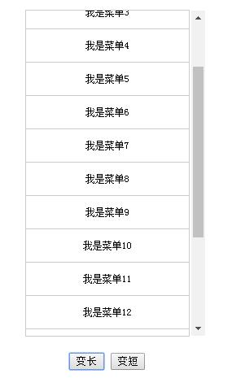
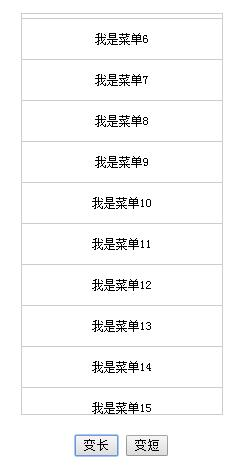

前记
当我们的内容超出了我们的div，往往会出现滚动条，影响美观。
尤其是当我们在做一些导航菜单的时候。滚动条一出现就破坏了UI效果。我们不希望出现滚动条，也不希望超出去的内容被放逐，就要保留鼠标滚动的效果。
方法
这里介绍一个简单的方法。大体思路是在div外面再套一个div。这个div设置overflow:hidden。
而内容div设置 overflow-y: scroll;overflow-x: hidden;
然后再设置外层div的width小于内层div的width。
这个内层div其实是会出现滚动条的，所以不影响鼠标的滚动效果，而且我们看不到滚动条了。
效果
内层div效果：

1.png
套上外层div效果后：

2.png
代码
css代码：
1 | .nav_wrap{ |
html代码：
1 | <div class= "nav_wrap"> |
之前的一个项目中的菜单用到了这个技巧。那个项目用了iframe。 也是让滚动条被遮住了。
今天又顺手把目前在做的项目中的导航菜单的滚动条去掉了。 简单总结下来。
演示
演示：http://runningls.com/demos/2016/css/scroll.html
转载于：https://blog.csdn.net/liusaint1992/article/details/51277751
作者：liusaint1992